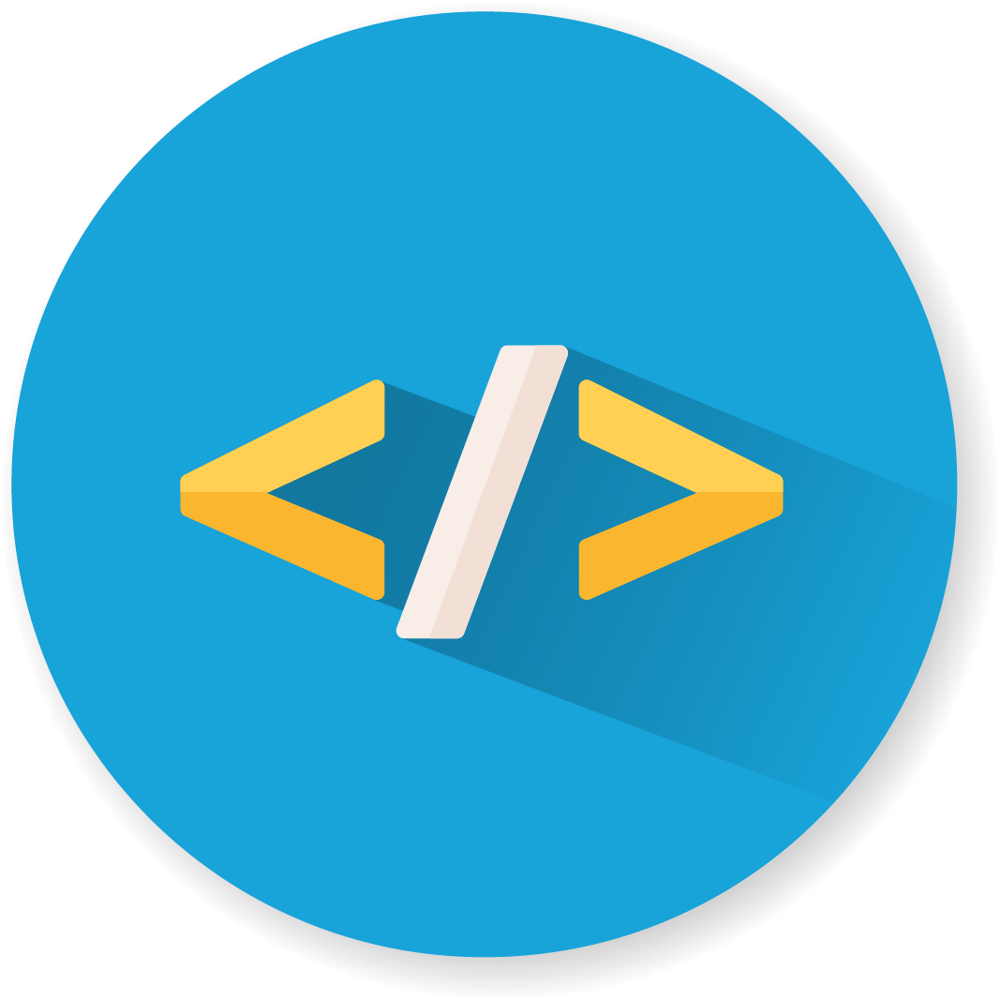

QUÈ ÉS L'HTML?
HTML és el llenguatge amb el qual es defineix el contingut de les pàgines web. Correspon a les sigles en anglès de Llenguatge de Marcat d'Hipertext, bàsicament són un conjunt d'etiquetes que el navegador interpreta i s'empren per a definir el text i altres elements que compondran una pàgina web, com a imatges, llistes, taules, vídeos, etc.

El llenguatge HTML serveix per a descriure l'estructura bàsica d'una pàgina i organitzar la forma en què es mostrarà el seu contingut, a més de que HTML permet incloure enllaços cap a altres pàgines o documents.
Cal esmentar que l'HTML no és un llenguatge de programació, ja que no compta amb funcions aritmètiques, variables o estructures de control pròpies d'aquests llenguatges, per la qual cosa l'HTML únicament serveix per a crear pàgines web estàtiques. No obstant això, aquest llenguatge és molt útil ja que combinat amb altres llenguatges de programació obtenim pàgines web dinàmiques com les que coneixem avui dia. Llegir més...
QUÈ SÓN LES ETIQUETES HTML?
El llenguatge HTML està compost per etiquetes. Aquestes són fragments de text envoltats per claudàtors l'ús dels quals és escriure el codi HTML. Es delimiten usant parèntesis angulars (“< >”) de la següent forma: <etiqueta>. Les etiquetes s'utilitzen per a descriure alguna cosa que es vol representar en una pàgina web, la seva aparença.

Tipus d'etiquetes
L'HTML té definides gran varietat d'etiquetes per a diferents usos en aquest article t'explicarem les més essencials.
- Etiquetes d'obertura:
- - Són l'inici. Indiquen on comença l'element o on comença a tenir efecte. Consisteixen en el nom de l'element tancat entre els claudàtors angulars.
- Etiquetes de tancament:
- Són el mateix que les etiquetes d'obertura, però aquestes indiquen on finalitza l'element. A més, es diferencien de les altres ja que abans d'escriure l'element entre els claudàtors, hem d'escriure una barra diagonal “/ ”.
- Etiqueta de secció superior:
- Aquesta etiqueta indica la part superior del text o encapçalat.
- Etiquetes de títol:
- S'usa per a indicar que el que es posarà a continuació és el títol de la pàgina web.
- Etiquetes de cos:
- Aquesta etiqueta indica la part del cos o desenvolupament del text.
- Etiqueta de secció inferior:
- Indica la part inferior del text. Pot ser una conclusió o la part amb icones de xarxes socials.
- Etiqueta de títol:
- Títol o encapçalat de la pàgina.
- Etiqueta de subtítol:
- Títol de nivell 2 o subtítol.
- Etiqueta d'apartat:
- Subapartat. També hi ha <h4>, <h5>, <h6>…
- Etiquetes de paràgraf:
- Fa que cada element o text aparegui en una nova línia agrupat.
- Etiquetes de negreta:
- Serveixen perquè el text que tanquen es trobi ressaltat.
- Etiquetes de cursiva:
- Els elements que tanca apareixen en cursiva.
- Etiquetes d'imatge:
- S'empra per a inserir una imatge en la pàgina en el lloc on es vol incloure. Cuidat! Aquesta etiqueta no necessita una de tancament.
- Etiquetes de ratllat:
- Els elements que tanca apareixen ratllats.
- Etiquetes d'enllaç:
- Permet generar un vincle o link.